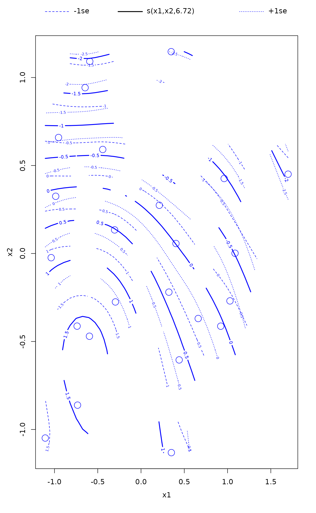
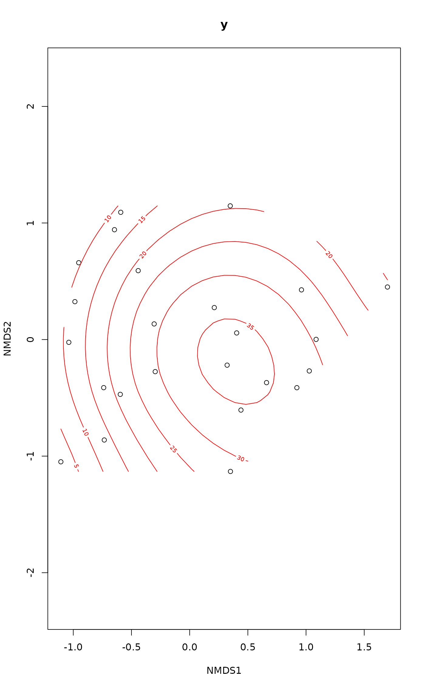
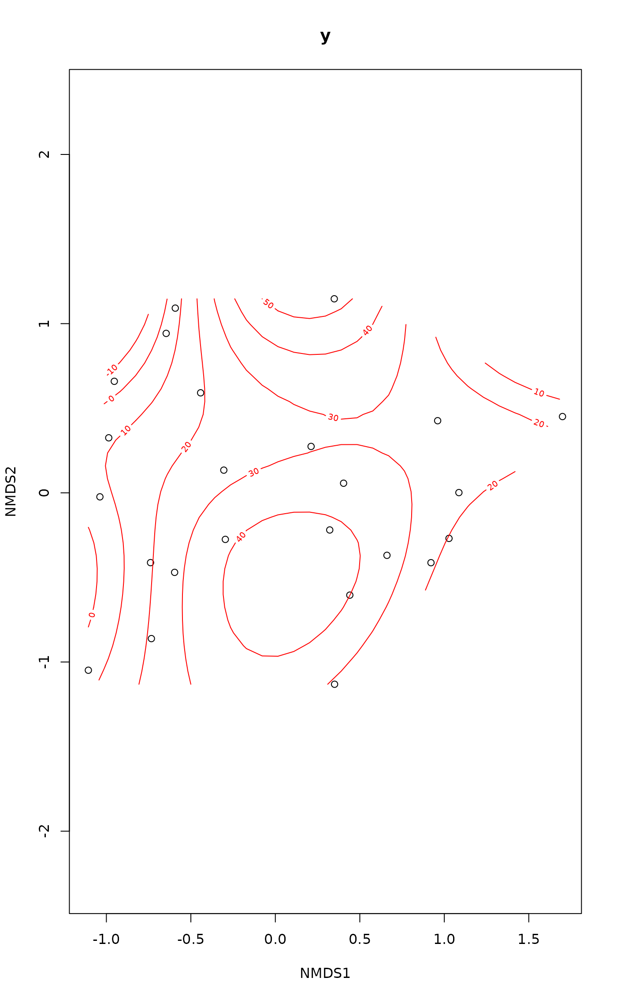

Fit and Plot Smooth Surfaces of Variables on Ordination.
ordisurf.RdFunction ordisurf fits a smooth surface for given variable and
plots the result on ordination diagram.
# S3 method for default ordisurf(x, y, choices = c(1, 2), knots = 10, family = "gaussian", col = "red", isotropic = TRUE, thinplate = TRUE, bs = "tp", fx = FALSE, add = FALSE, display = "sites", w = weights(x, display), main, nlevels = 10, levels, npoints = 31, labcex = 0.6, bubble = FALSE, cex = 1, select = TRUE, method = "REML", gamma = 1, plot = TRUE, lwd.cl = par("lwd"), ...) # S3 method for formula ordisurf(formula, data, ...) # S3 method for ordisurf calibrate(object, newdata, ...) # S3 method for ordisurf plot(x, what = c("contour","persp","gam"), add = FALSE, bubble = FALSE, col = "red", cex = 1, nlevels = 10, levels, labcex = 0.6, lwd.cl = par("lwd"), ...)
Arguments
| x | For |
|---|---|
| y | Variable to be plotted / modelled as a function of the ordination scores. |
| choices | Ordination axes. |
| knots | Number of initial knots in |
| family | Error distribution in |
| col | Colour of contours. |
| isotropic, thinplate | Fit an isotropic smooth surface (i.e. same
smoothness in both ordination dimensions) via
|
| bs | a two letter character string indicating the smoothing basis
to use. (e.g. |
| fx | indicates whether the smoothers are fixed degree of freedom
regression splines ( |
| add | Add contours to an existing diagram or draw a new plot? |
| display | Type of scores known by |
| w | Prior weights on the data. Concerns mainly |
| main | The main title for the plot, or as default the name of plotted variable in a new plot. |
| nlevels, levels | Either a vector of |
| npoints | numeric; the number of locations at which to evaluate the fitted surface. This represents the number of locations in each dimension. |
| labcex | Label size in contours. Setting this zero will suppress labels. |
| bubble | Use a “bubble plot” for points, or vary the point
diameter by the value of the plotted variable. If |
| cex | Character expansion of plotting symbols. |
| select | Logical; specify |
| method | character; the smoothing parameter estimation
method. Options allowed are: |
| gamma | Multiplier to inflate model degrees of freedom in GCV or
UBRE/AIC score by. This effectively places an extra penalty on
complex models. An oft-used value is |
| plot | logical; should any plotting be done by
|
| lwd.cl | numeric; the |
| formula, data | Alternative definition of the fitted model as
|
| object | An |
| newdata | Coordinates in two-dimensional ordination for new points. |
| what | character; what type of plot to produce. |
| ... | Other parameters passed to |
Details
Function ordisurf fits a smooth surface using penalised
splines (Wood 2003) in gam, and uses
predict.gam to find fitted values in a regular
grid. The smooth surface can be fitted with an extra penalty that
allows the entire smoother to be penalized back to 0 degrees of
freedom, effectively removing the term from the model (see Marra &
Wood, 2011). The addition of this extra penalty is invoked by
setting argument select to TRUE. An alternative is to
use a spline basis that includes shrinkage (bs = "ts" or
bs = "cs").
ordisurf() exposes a large number of options from
gam for specifying the basis functions used for
the surface. If you stray from the defaults, do read the
Notes section below and relevant documentation in
s and smooth.terms.
The function plots the fitted contours with convex hull of data points
either over an existing ordination diagram or draws a new plot. If
select = TRUE and the smooth is effectively penalised out of
the model, no contours will be plotted.
gam determines the degree of smoothness for the
fitted response surface during model fitting, unless fx =
TRUE. Argument method controls how gam
performs this smoothness selection. See gam for
details of the available options. Using "REML" or "ML"
yields p-values for smooths with the best coverage properties if such
things matter to you.
The function uses scores to extract ordination scores,
and x can be any result object known by that function.
The user can supply a vector of prior weights w. If the
ordination object has weights, these will be used. In practise this
means that the row totals are used as weights with cca
or decorana results. If you do not like this, but want
to give equal weights to all sites, you should set w =
NULL. The behaviour is consistent with envfit. For
complete accordance with constrained cca, you should set
display = "lc".
Function calibrate returns the fitted values of the response
variable. The newdata must be coordinates of points for which
the fitted values are desired. The function is based on
predict.gam and will pass extra arguments to
that function.
Value
ordisurf is usually called for its side effect of drawing the
contour plot. The function returns a result object of class
"ordisurf" that inherits from gam used
internally to fit the surface, but adds an item grid that
contains the data for the grid surface. The item grid has
elements x and y which are vectors of axis coordinates,
and element z that is a matrix of fitted values for
contour. The values outside the convex hull of observed
points are indicated as NA in z. The
gam component of the result can be used for
further analysis like predicting new values (see
predict.gam).
Note
The default is to use an isotropic smoother via
s employing thin plate regression splines
(bs = "tp"). These make sense in ordination as they have
equal smoothing in all directions and are rotation invariant. However,
if different degrees of smoothness along dimensions are required, an
anisotropic smooth surface may be more applicable. This can be
achieved through the use of isotropic = FALSE, wherein the
surface is fitted via a tensor product smoother via
te (unless bs = "ad", in which case
separate splines for each dimension are fitted using
s).
Cubic regression splines and P splines can only be used with
isotropic = FALSE.
Adaptive smooths (bs = "ad"), especially in two dimensions,
require a large number of observations; without many hundreds of
observations, the default complexities for the smoother will exceed
the number of observations and fitting will fail.
To get the old behaviour of ordisurf use select = FALSE,
method = "GCV.Cp", fx = FALSE, and bs = "tp". The
latter two options are the current defaults.
Graphical arguments supplied to plot.ordisurf are passed on to
the underlying plotting functions, contour, persp, and
plot.gam. The exception to this is that arguments
col and cex can not currently be passed to
plot.gam because of a bug in the way that function
evaluates arguments when arranging the plot.
A work-around is to call plot.gam directly on the
result of a call to ordisurf. See the Examples for an
illustration of this.
Warning
The fitted GAM is a regression model and has the usual assumptions of such models. Of particular note is the assumption of independence of residuals. If the observations are not independent (e.g. they are repeat measures on a set of objects, or from an experimental design, inter alia) do not trust the p-values from the GAM output.
If you need further control (i.e. to add additional fixed effects to
the model, or use more complex smoothers), extract the ordination
scores using the scores function and then generate your own
gam call.
References
Marra, G.P & Wood, S.N. (2011) Practical variable selection for generalized additive models. Comput. Stat. Data Analysis 55, 2372--2387.
Wood, S.N. (2003) Thin plate regression splines. J. R. Statist. Soc. B 65, 95--114.
See also
For basic routines gam,
and scores. Function
envfit provides a more traditional and compact
alternative.
Examples
data(varespec) data(varechem) vare.dist <- vegdist(varespec) vare.mds <- monoMDS(vare.dist) ordisurf(vare.mds ~ Baresoil, varechem, bubble = 5)#> #> Family: gaussian #> Link function: identity #> #> Formula: #> y ~ s(x1, x2, k = 10, bs = "tp", fx = FALSE) #> #> Estimated degrees of freedom: #> 5.33 total = 6.33 #> #> REML score: 93.94137## as above but without the extra penalties on smooth terms, ## and using GCV smoothness selection (old behaviour of `ordisurf()`): ordisurf(vare.mds ~ Baresoil, varechem, col = "blue", add = TRUE, select = FALSE, method = "GCV.Cp")#> #> Family: gaussian #> Link function: identity #> #> Formula: #> y ~ s(x1, x2, k = 10, bs = "tp", fx = FALSE) #> #> Estimated degrees of freedom: #> 7.34 total = 8.34 #> #> GCV score: 154.2846## Cover of Cladina arbuscula fit <- ordisurf(vare.mds ~ Cladarbu, varespec, family=quasipoisson)#> 18 15 24 27 23 19 22 #> 21.6241742 8.0345257 3.8614014 2.4596484 6.3958042 5.4260473 6.7156641 #> 16 28 13 14 20 25 7 #> 11.6759921 0.8042837 31.1729527 16.1942718 9.5898570 5.4218061 29.8221203 #> 5 6 3 4 2 9 12 #> 22.8492923 29.9937678 7.1654307 15.5308607 2.8468526 0.9051282 3.5541412 #> 10 11 21 #> 1.3099235 10.7782764 0.9177774## Variable selection via additional shrinkage penalties ## This allows non-significant smooths to be selected out ## of the model not just to a linear surface. There are 2 ## options available: ## - option 1: `select = TRUE` --- the *default* ordisurf(vare.mds ~ Baresoil, varechem, method = "REML", select = TRUE)#> #> Family: gaussian #> Link function: identity #> #> Formula: #> y ~ s(x1, x2, k = 10, bs = "tp", fx = FALSE) #> #> Estimated degrees of freedom: #> 5.33 total = 6.33 #> #> REML score: 93.94137## - option 2: use a basis with shrinkage ordisurf(vare.mds ~ Baresoil, varechem, method = "REML", bs = "ts")#> #> Family: gaussian #> Link function: identity #> #> Formula: #> y ~ s(x1, x2, k = 10, bs = "ts", fx = FALSE) #> #> Estimated degrees of freedom: #> 6.26 total = 7.26 #> #> REML score: 98.83935#>#>## 'col' effects all objects drawn... ### controlling the basis functions used ## Use Duchon splines ordisurf(vare.mds ~ Baresoil, varechem, bs = "ds")#> #> Family: gaussian #> Link function: identity #> #> Formula: #> y ~ s(x1, x2, k = 10, bs = "ds", fx = FALSE) #> #> Estimated degrees of freedom: #> 5.33 total = 6.33 #> #> REML score: 93.94138## A fixed degrees of freedom smooth, must use 'select = FALSE' ordisurf(vare.mds ~ Baresoil, varechem, knots = 4, fx = TRUE, select = FALSE)#> #> Family: gaussian #> Link function: identity #> #> Formula: #> y ~ s(x1, x2, k = 4, bs = "tp", fx = TRUE) #> #> Estimated degrees of freedom: #> 3 total = 4 #> #> REML score: 85.5509## An anisotropic smoother with cubic regression spline bases ordisurf(vare.mds ~ Baresoil, varechem, isotropic = FALSE, bs = "cr", knots = 4)#> #> Family: gaussian #> Link function: identity #> #> Formula: #> y ~ te(x1, x2, k = c(4, 4), bs = c("cr", "cr"), fx = c(FALSE, #> FALSE)) #> #> Estimated degrees of freedom: #> 3.08 total = 4.08 #> #> REML score: 93.02821## An anisotropic smoother with cubic regression spline with ## shrinkage bases & different degrees of freedom in each dimension ordisurf(vare.mds ~ Baresoil, varechem, isotropic = FALSE, bs = "cs", knots = c(3,4), fx = TRUE, select = FALSE)#> #> Family: gaussian #> Link function: identity #> #> Formula: #> y ~ te(x1, x2, k = c(3, 4), bs = c("cs", "cs"), fx = c(TRUE, #> TRUE)) #> #> Estimated degrees of freedom: #> 11 total = 12 #> #> REML score: 42.98319